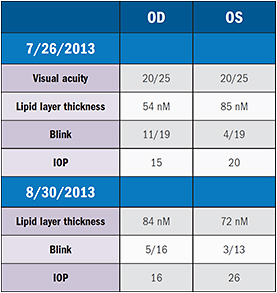
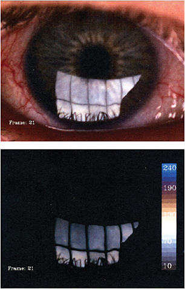
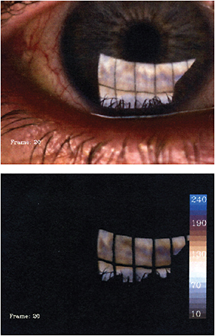

Ocular surface disease (OSD) is common among glaucoma patients. Medications may be contributing factors to OSD, or the prevalence may simply result from the same factors that contribute to patients getting glaucoma. Whatever the cause for this correlation, it’s important for us to diagnose and treat OSD for patients with glaucoma, regardless of whether they are symptomatic. The most important reason for this is that I want my glaucoma patients to be alert to any fluctuations in their vision, and ocular surface treatment helps to eliminate one potential cause of those fluctuations.
Patients often don’t have complaints about comfort or vision fluctuation because they accept these changes as normal. For this reason, many practices have patients complete screening questionnaires to uncover their experiences with ocular surface problems. Patients who score 7 points or higher on the questionnaire receive a dry eye evaluation. In my practice, we’ve chosen a different approach. A serious look at the eyelids and tear film is part of our comprehensive exam. It does require discipline when there are time constraints, but OSD is a priority for us, so we’ve made time to include it as part of our exam routine.
Meibomian Gland Dysfunction (MGD) is at the root of dry eye disease for many of my patients. Like glaucoma, MGD can be detected by observing functional and structural changes to the glands. Early functional change (e.g., mild obstruction) can lead to observable structural change (e.g., drop out), if MGD goes undetected.
MGD impacts lipid layer thickness and tear film quality, and the resulting cornea damage can be revealed through staining. When the glands are plugged, we observe functional changes through diagnostic gland evaluation and reduced lipid layer thickness. We also image the meibomian glands which provides the structural evidence we need to share with the patient.
A 67-year-old patient with significant pseudoexfoliative glaucoma presented with complaints of dry, red and achy eyes. His vision sometimes fluctuated as well, particularly after hours of computer use.
The patient had undergone trabeculectomy on both eyes 14 years prior and cataract surgery with Restor (Alcon) IOLs in both eyes 7 years later. He was using cyclosporine ophthalmic emulsion (Restasis, Allergan) and timolol, but it sounded to me as though deficient tear film may have been affecting his comfort and vision.
Testing with LipiView showed that the lipid layer was diminished, particularly in the right eye (54 nM OD, 85 nM OS) (Figures 1 & 2). The intraocular pressure (IOP) was better controlled in the right eye, but both eyes had mild conjunctival injection.
Figure 1. Initial and 1-month follow-up LipiView results (OD treated, OS untreated)
Figure 2. Untreated right eye
In my practice, we were early adopters of LipiView and LipiFlow. When this patient came in, we were in the process of putting together a dry eye evaluation and workup plan. Our LipiFlow machine was new, and we were learning how to make that technology a routine treatment for dry eye in the practice.
Because the patient had a significantly thinner lipid layer in the right eye, I ordered LipiFlow treatment on that eye. Today, we would most likely treat both eyes using LipiFlow. We were very interested to see the treatment outcomes of this new technology.
At a follow-up visit several days later, the patient said his eyes felt better, but I wasn’t sure if significant improvement had occurred. At 1 month, LipiView objectively showed us that the lipid layer had improved dramatically, from 54 nM to 84 nM (Figure 3). I now rely on a number of secreting glands to determine improvement.
Figure 3. Right eye treated with LipiFlow
At 4 months, we began to see the downside of treating the right eye alone. There was a marked difference between the two eyes. The treated right eye was comfortable with minimal conjunctival injection, while the left eye was red and the patient reported discomfort.
The patient’s IOP had also increased significantly in the left eye, from 20 to 26 mmHg, while the right eye remained stable. Although this change is not directly attributable to treating just one eye with LipiFlow, I did wonder if treatment of the ocular surface was affecting timolol compliance or how well it penetrated. I switched the left eye from timolol alone to dorzolamide and timolol (Cosopt, Merck) and brimonidine (Alphagan, Allergan) for IOP control. Ultimately, it wasn’t enough, and the left eye required a canaloplasty.
MGD diagnosis has evolved rapidly in the last few years. As an early adopter of the LipiFlow technology, the similarities to glaucoma have surprised me.
The use of metrics and technology for the diagnosis of MGD is new. Now that they are available, we’ve developed an effective protocol to offer our patients a much higher standard of care and early intervention.
As an experienced ophthalmologist, I was initially skeptical about the LipiFlow treatment. Today, I understand and trust the technology and want to offer its benefits to my patients. ■
Sponsored by
Howard Barnebey, MD, is medical director of Specialty Eyecare Centre in Seattle. |